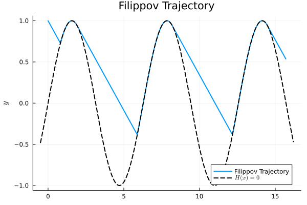

Filippov Example
A Filippov system contains the data $(F, G, H, N)$
- .$F(x)$ is the 'top' vector field.
- .$G(x)$ is the 'bottom' vector field.
- .$H(x)$ is the switching function.
- .$N(x)$ is the normal to the switching surface.
\[ \begin{cases} \dot{x} = F(x), & H(x) > 0 \\ \dot{x} = G(x), & H(x) < 0. \end{cases}\]
import HybridDynamics as HD
import Plots as plt
using LaTeXStrings
F(x) = [3, -1]
G(x) = [0, 1]
H(x) = x[2] - sin(x[1])
N(x) = [-cos(x[1]), 1]
sysF = HD.FilippovSystem(F, G, H, N)
probF = HD.prob(sysF, [0.0, 1.0], (0.0, 10.0))
solF = HD.solve(probF, HD.RK4())HybridDynamics.FilippovSol{Vector{Float64}, Vector{Vector{Float64}}, Vector{Vector{Float64}}, Vector{Float64}, Vector{Float64}, Vector{Int64}, Vector{Symbol}, Vector{Symbol}}([0.0, 0.01, 0.02, 0.03, 0.04, 0.05, 0.060000000000000005, 0.07, 0.08, 0.09 … 9.914145001479563, 9.924145001479562, 9.934145001479562, 9.944145001479562, 9.954145001479562, 9.964145001479562, 9.974145001479561, 9.984145001479561, 9.994145001479561, 10.0], [[0.0, 1.0], [0.030000000000000002, 0.99], [0.060000000000000005, 0.98], [0.09000000000000001, 0.97], [0.12000000000000001, 0.96], [0.15000000000000002, 0.95], [0.18000000000000002, 0.94], [0.21000000000000002, 0.9299999999999999], [0.24000000000000002, 0.9199999999999999], [0.27, 0.9099999999999999] … [15.437004177002134, 0.6228089327764057], [15.467004177002133, 0.6128089327764057], [15.497004177002133, 0.6028089327764057], [15.527004177002132, 0.5928089327764057], [15.557004177002131, 0.5828089327764057], [15.58700417700213, 0.5728089327764057], [15.61700417700213, 0.5628089327764056], [15.64700417700213, 0.5528089327764056], [15.677004177002129, 0.5428089327764056], [15.694569172563446, 0.5369539342559666]], [[3.0, -1.0], [3.0, -1.0], [3.0, -1.0], [3.0, -1.0], [3.0, -1.0], [3.0, -1.0], [3.0, -1.0], [3.0, -1.0], [3.0, -1.0], [3.0, -1.0] … [3.0, -1.0], [3.0, -1.0], [3.0, -1.0], [3.0, -1.0], [3.0, -1.0], [3.0, -1.0], [3.0, -1.0], [3.0, -1.0], [3.0, -1.0], [3.0, -1.0]], [0.28186547086830294, 0.29186547086830295, 0.30186547086830295, 0.31186547086830296, 0.32186547086830297, 0.331865470868303, 0.341865470868303, 0.351865470868303, 0.361865470868303, 0.371865470868303 … 9.501673997894127, 9.511673997894126, 9.521673997894126, 9.531673997894126, 9.541673997894126, 9.551673997894126, 9.561673997894125, 9.571673997894125, 9.581673997894125, 9.591673997894125], [0.2718654708683029, 1.2165645166868204, 2.5428838098940907, 5.405354813469733, 6.731673997894186, 9.59414500147957], [29, 124, 257, 544, 677, 964], [:f_to_k, :k_to_f, :f_to_k, :k_to_f, :f_to_k, :k_to_f], [:f, :f, :f, :f, :f, :f, :f, :f, :f, :f … :f, :f, :f, :f, :f, :f, :f, :f, :f, :f])xf = getindex.(solF.x, 1)
yf = getindex.(solF.x, 2)
xh = range(minimum(xf)-0.5, maximum(xf)+0.5, length=1_000)
plt.plot(xf, yf, lw=2, label="Filippov Trajectory")
plt.plot!(xh, sin.(xh), lw=2, lc=:black, ls=:dash, label=L"H(x)=0")
plt.plot!(title = "Filippov Trajectory", label=L"x", ylabel=L"y")